Photo Gallery
Explore our collection of stunning images from trails across Texas, Oklahoma, Missouri, and Arkansas.
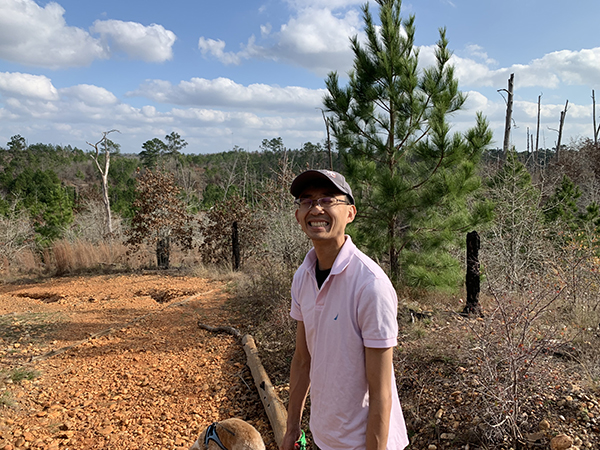
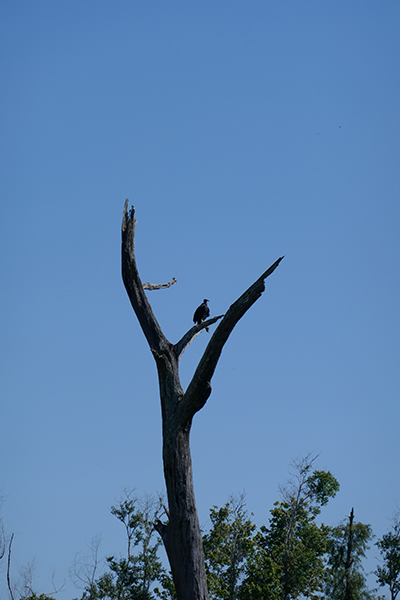
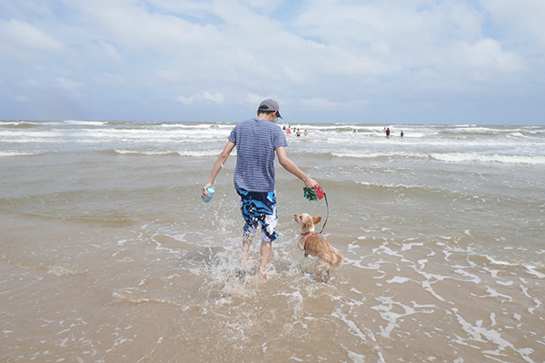
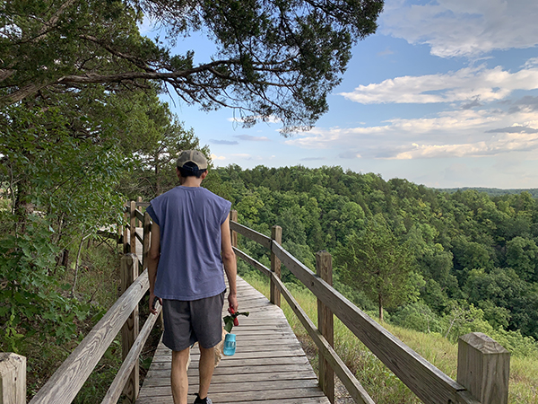
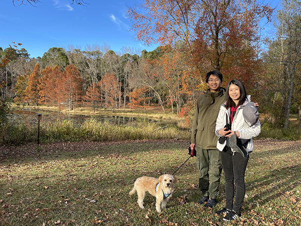
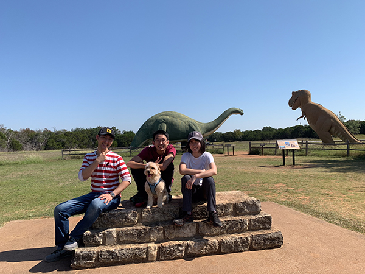
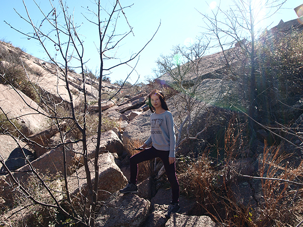
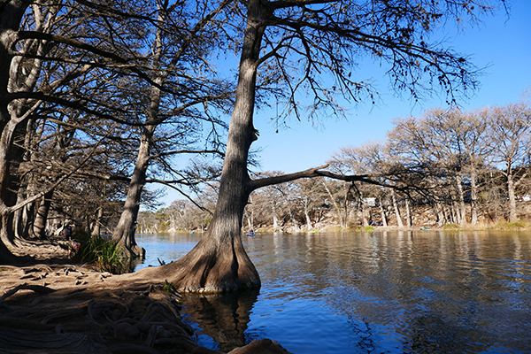
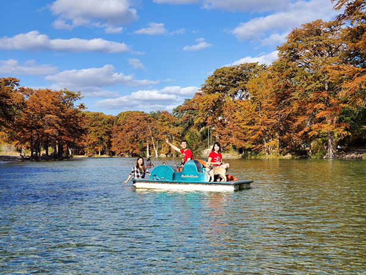
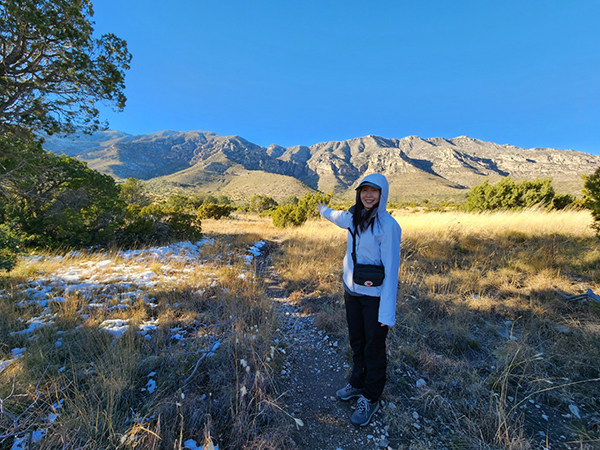
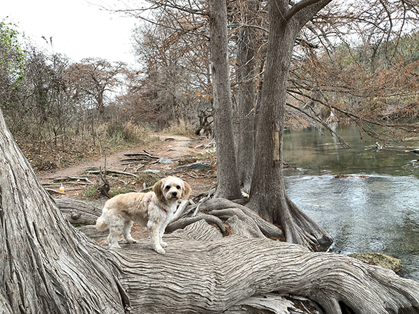
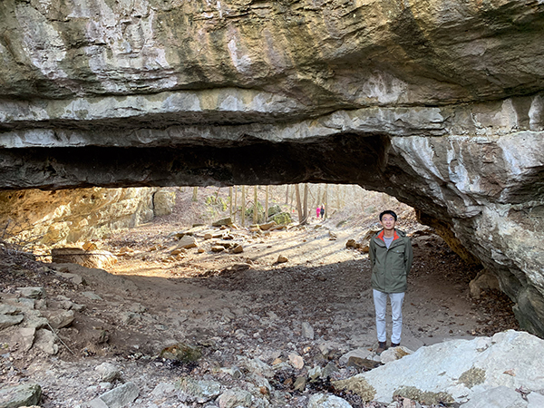
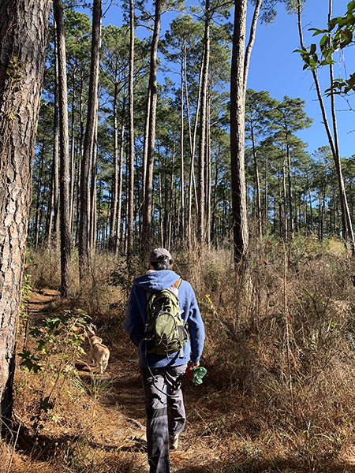
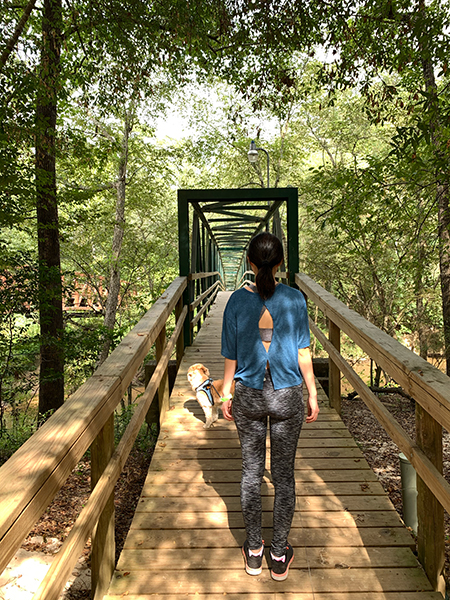
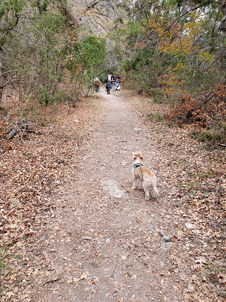
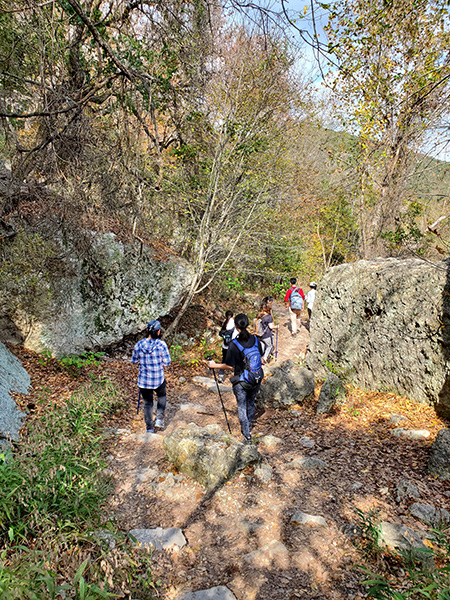
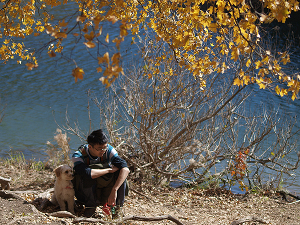
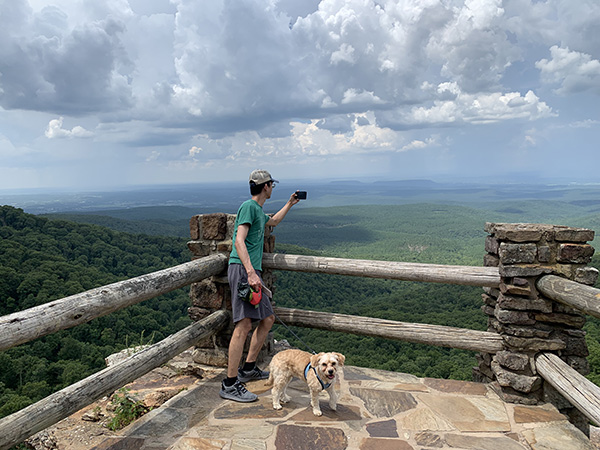
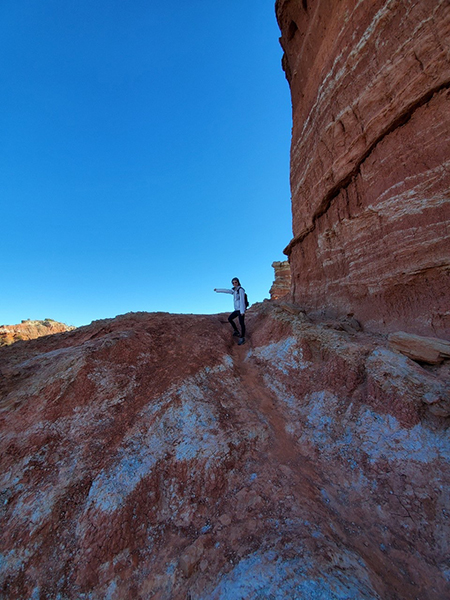
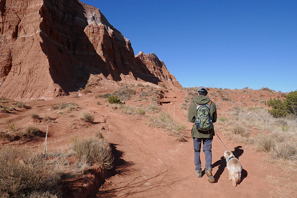
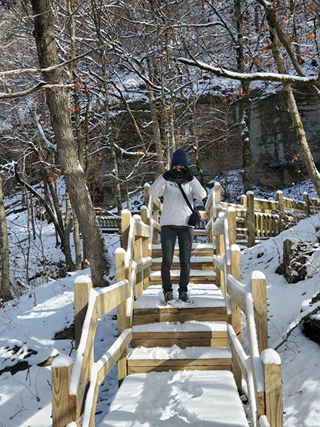
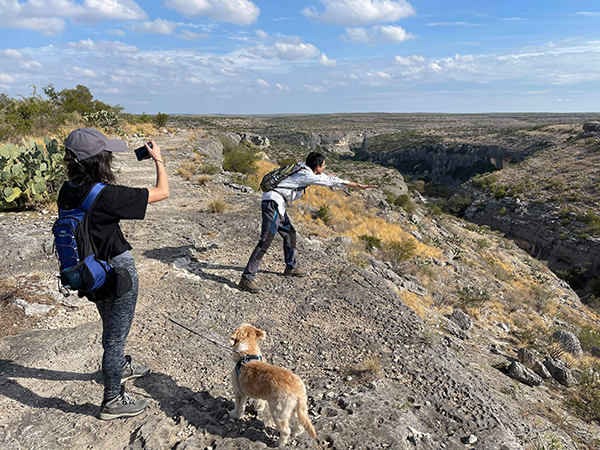
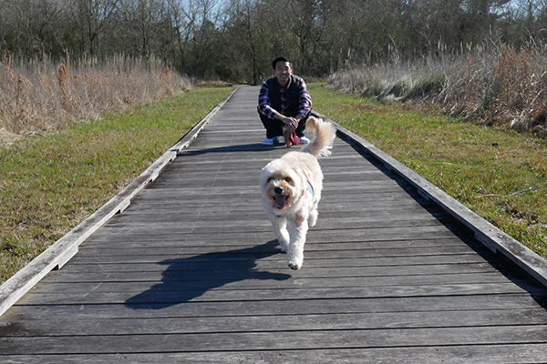
Video Highlights
Experience the beauty of Texas state parks through our curated video highlights.
Seminole Canyon State Park features rugged terrain, ancient rock art, and scenic canyon overlooks along the Rio Grande. This short video captures highlights of a sunny winter hike on the Canyon Rim Trail, including panoramic views and desert wildlife.